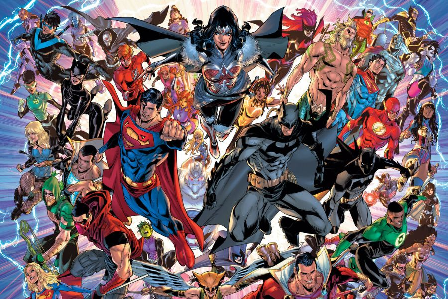

Relato o historia explicada mediante viñetas o recuadros que contienen ilustraciones y en el que algunas o todas las viñetas pueden contener un texto más o menos breve.
Marvel presenta su primer cómic de 'Alien', demostrando que la fusión creativa de Disney y Fox es un hecho
En la presentación del cómic, que sale el próximo 24 de marzo en Estados Unidos, Larroca ha afirmado que "Alien es una referencia creativa para toda una generación de artistas, y estoy muy orgulloso de ilustrar ahora esta serie".
Y comenta que "he pasado muchas horas en el fondo de un aula esbozando ideas sobre lo que ocurría antes, después y entre los capítulos que hemos podido ver" en el cine, así este 'Alien' es un proyecto muy querido por él.
DC Comics continuará Infinite Frontier #0 con un nuevo cómic a partir de junio

Durante esta semana DC Comics finalmente concretó la publicación de Infinite Frontier #0, un cómic que pretendía establecer el nuevo escenario de las publicaciones de la editorial después de los cambios a su Multiverso que
ocurrieron en el final de Dark Nights: Death Metal.